Sticky Shift with lock
Use Shift once for the next keypress, or double-tap it to keep Shift active until you turn it off.

StickyKeysNative macOS menu bar utility
StickyKeys turns your chosen side of Shift, Option, and Command into one-shot modifiers, so common shortcuts stay reachable with one hand.
One-shot Shift
One-shot Option
One-shot Command
Designed for access
Press and release your selected Shift, Option, or Command key, then type, click, drag, or scroll. StickyKeys applies the modifier to that action and returns to normal. Double-tap Shift to keep Shift Lock on.
Why it exists
StickyKeys was created by Pawel Maczewski for accessibility reasons when he temporarily could not use his left hand. The goal was simple: keep everyday keyboard shortcuts, typing, and mouse-clicks practical when holding multiple keys at once was no longer an option.
Use Shift once for the next keypress, or double-tap it to keep Shift active until you turn it off.
Make alternate characters and Option shortcuts easier when one side of the keyboard is hard to reach.
Run common macOS shortcuts like Command-A without having to hold two keys at once.
A small non-interactive HUD shows the pending modifier and disappears when the action is used or cancelled.
Pick the side that is easier to reach. The other side keeps behaving like a normal modifier key.
Optionally apply pending modifiers to clicks, drags, and scroll events for broader macOS workflows.
Privacy first
StickyKeys needs Accessibility and Input Monitoring permissions to observe modifier keys and apply them locally on your Mac.
Simple pricing
StickyKeys is open source, so its safety can be verified from the code. If you want to support the author and skip the hassle of building the project yourself, buy the ready-to-use macOS app.
StickyKeys lives in the menu bar and can launch at login. Grant macOS Accessibility and Input Monitoring permissions once, then keep working.